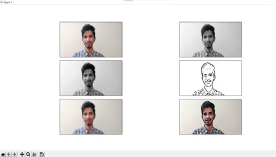

ABOUT ME
I am an organized person. I employ various techniques, including taking copious notes to keep myself on track and meet my deadlines. So that I can always find what I need, I like to keep a tidy desk and use a system of well-thought-out file folders. In my experience, this boosts productivity and keeps everyone on the same page. In my previous position, I developed a filing system that has resulted in a 15% improvement in productivity throughout the department.
SKILLS
- python
- HTML
- css
- sql
PROJECTS
DISASTER MANAGEMENT USING ARDUINO UNO

Disaster management is a critical area where technology can play a vital role in mitigating the impact of natural disasters. Arduino is a microcontroller-based platform that can be used in disaster management projects to build low-cost, robust, and efficient systems for disaster management and response. One such project is the development of an early warning system using Arduino. The system can be designed to detect the presence of various natural disasters such as earthquakes, floods, landslides, etc. Sensors such as accelerometers, gyroscopes, and GPS modules can be used to collect real-time data and transmit it to the central system. The system can then analyze the data and provide early warning alerts to the concerned authorities and individuals in the affected areas. Overall, the use of Arduino in disaster management projects can help to improve the speed and efficiency of disaster response, reduce the impact of disasters on human lives and property, and improve the resilience of communities in the face of disasters.
CARTOONIFYING IMAGE USING CV IN PYTHON
Cartoonifying an image is a popular technique used in image processing and computer vision. The goal of this project is to transform a regular image into a cartoon-like image, giving it a unique and visually appealing style. Python is a popular programming language used in this project due to its ease of use, extensive libraries, and image processing capabilities. The output of the project is a cartoon-like image that has been transformed from a regular image using these image processing techniques. This project can be extended to work with live video feeds, allowing for real-time cartoonification of video streams. Overall, this project is an excellent example of how Python can be used in image processing and computer vision applications, and it provides a fun and visually appealing result that can be used in various creative applications.